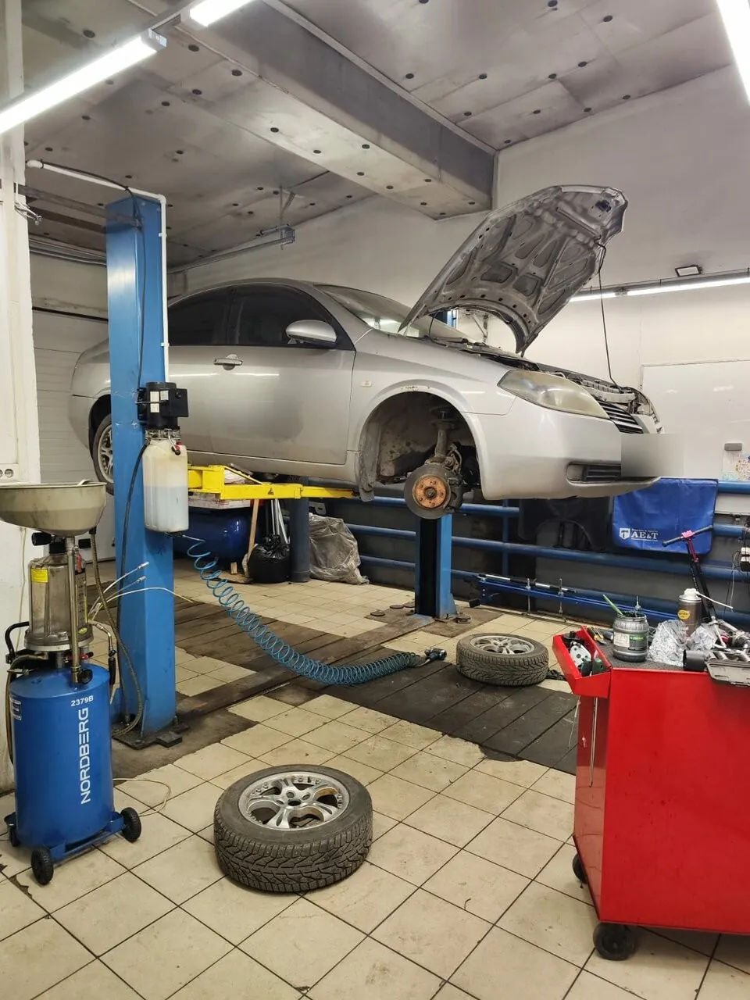
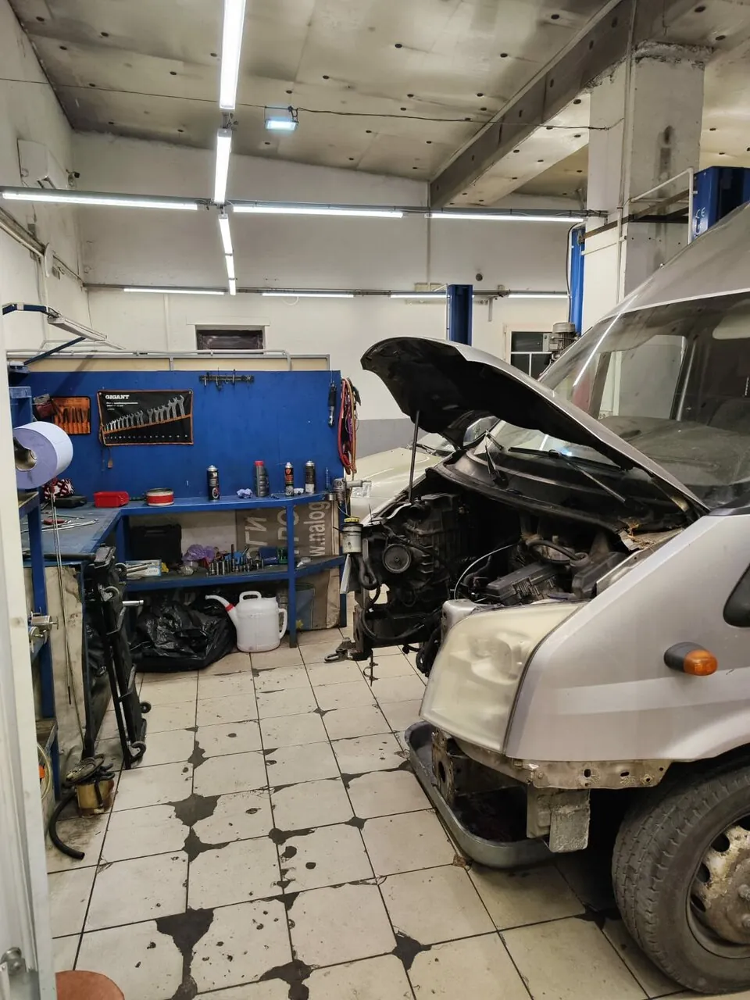
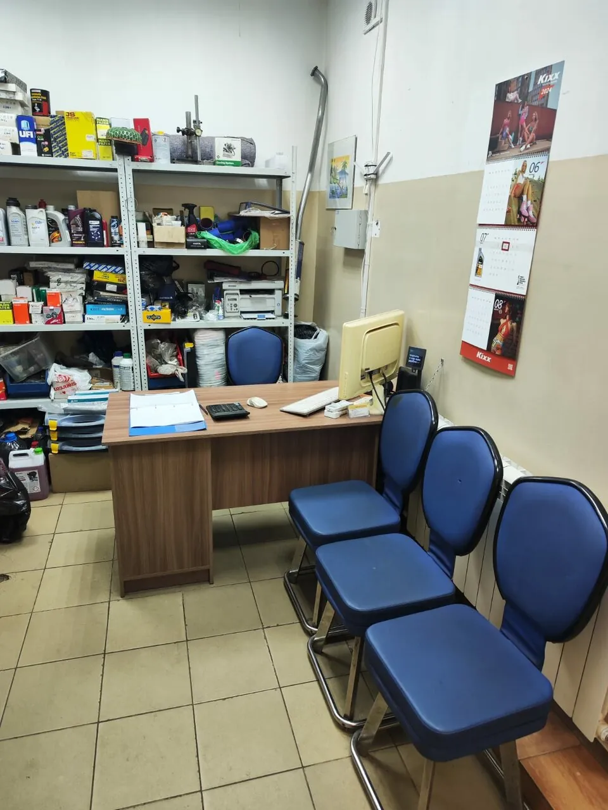
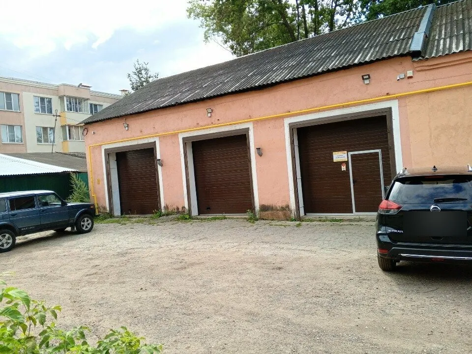
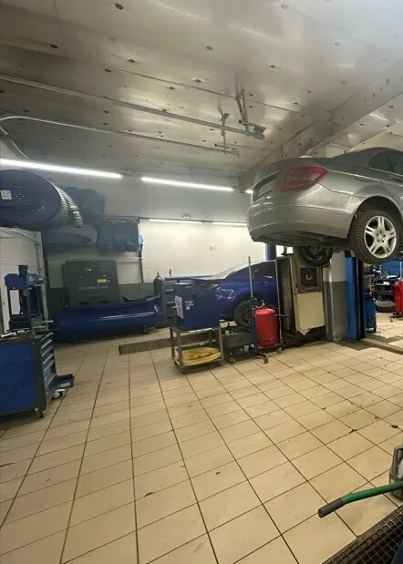

Ходовая и рулевое
Амортизаторы, пружины, рычаги, шаровые, ремонт и замена рулевой рейки, сход-развал.
Коломна, ул. Малышева, 19В · вт–сб 9–19
Диагностика, подвеска, двигатель, коробка, тормоза и сварка – в одном сервисе с магазином запчастей. Рядом рынок и ТЦ РИО: оставьте машину и займитесь своими делами.
«Порадовало что самой не пришлось бегать за запчастями. Я занятой человек и мне было бы это очень сложно.»Полина
Так проходит ремонт по словам наших клиентов – без беготни по магазинам.
«При диагностике, проведённой при мне сразу после подъёма машины на месте через 10 минут показали повреждённые части передней подвески.»
Полина«Одной шаровой небыло на складе, так пока занимались одной, вторую привезли в течении 15 минут.»
Домовой Андрей«пока работу полностью не сделали, от машины не отходили на перекуры и лишнюю болтовню.»
Домовой Андрей«выдали полный комплект документов и список рекомендаций»
hay hay
Амортизаторы, пружины, рычаги, шаровые, ремонт и замена рулевой рейки, сход-развал.
ГРМ, турбины, прокладки и сальники, капремонт, сцепление, замена КПП, генераторы и стартеры.
Колодки, диски, суппорты, прокачка, ABS/ESP, масло, жидкости, аккумулятор.
Тоже здесь, под одной крышей с ремонтом. Опишите задачу по телефону или пришлите фото в WhatsApp.


Подберём запчасти под вашу машину – подбор стоит 100 ₽. Что есть на полке, ставим сразу.
Сервис стоит недалеко от «Авганца», ТЦ РИО и рынка. Если ждать на месте – есть стулья, а клиентам предлагают чай и кофе.
«Оставила машину и ушла на рынок минут на 30 , придя обратно , мастер уже опускал мою машину на землю .»hay hay, замена масла

Цены из нашей карточки на Яндекс Картах. Стоимость зависит от машины – точную сумму уточняйте по телефону до начала ремонта.
Гарантия на работы: {{условия гарантии}}
4,425 оценок и 13 отзывов на Яндекс Картах
Очень довольна выполненным ремонтом. Работа сделана качественно и очень быстро. Мастера хорошо разбираются в ремонте автомобиля. Обратилась когда услышала посторонние звуки в передней части автомобиля. При диагностике, проведённой при мне сразу после подъёма машины на месте через 10 минут показали повреждённые части передней подвески. Порадовало что самой не пришлось бегать за запчастями. Я занятой человек и мне было бы это очень сложно. Сейчас уже долгое время не знаю проблем с машиной после проведённого ремонта. В целом рекомендую.
Приехал в этот автосервис по рекомендации. Ребята мастера хоть молодые, но дело своё знают. Меняли обе шаровые и пока работу полностью не сделали, от машины не отходили на перекуры и лишнюю болтовню. Цены на работу и запчасти очень приятные. Одной шаровой небыло на складе, так пока занимались одной, вторую привезли в течении 15 минут. Как клиенту, мне радушно, не единожды предлагали чай или кофе. В общем, всё культурно и чинно. Теперь буду периодически заглядывать сюда, по мере необходимости.
По воле случая , пришлось приехать в незнакомый для меня на тот момент сервис , на очередную замену масла в двигателе , пообщавшись с менеджером , все запчасти оказались по наличию на мое авто , мастер сразу принялся за работу . Оставила машину и ушла на рынок минут на 30 , придя обратно , мастер уже опускал мою машину на землю . По стоимости работ меня все устроило , мастер предоставил мне все старые фильтра . По окончанию работ , выдали полный комплект документов и список рекомендаций , по работам которые необходимо произвести в ближайшее время . В общем и целом все устроило Спасибо
Воспользовался этим сервисом первый раз. Нужно было поменять масло и фильтры. Благодаря внимательности персонала, обнаружилось ещё несколько неисправностей! Всё проверили, съездили сами за запчастями и исправили! Качеством и отношением остался доволен!
Ремонтируюсь не в первый раз, очень доволен обслуживанием и подходом к решению проблем- одним словом профессионалы,! Внимательно выслушают, предложат решение, качественно выполнят, и результат - довольный клиент, а что ещё надо!!! Отдельное спасибо Андрею и менеджеру Наталье!!!
Доброжелательное общение, что редкость для автосервисов. Достиаточно чистый сервис. Поменяли тормозные диски и колодки, все хорошо. Цены средние. Есть магащин запчастей на месте.
Прекрасный автосервис! Починили и объяснили то, в чëм была проблема. Спасибо за качество.😊
Все по делу и в обговоренные сроки! Спасибо большое, огромное!!!
Хороший автосервис с хорошими ценами.

Открыть на Яндекс КартахМаршрут до сервиса